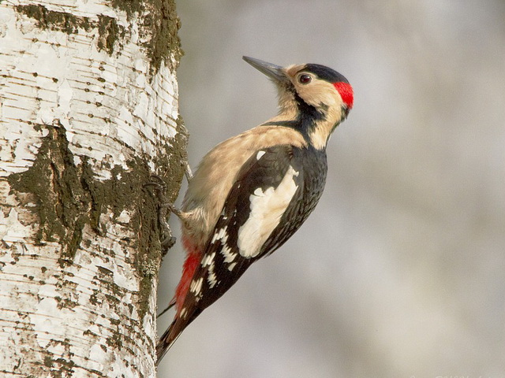
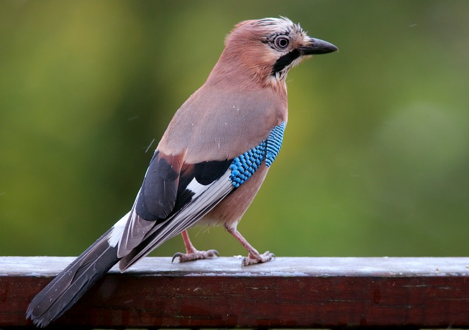
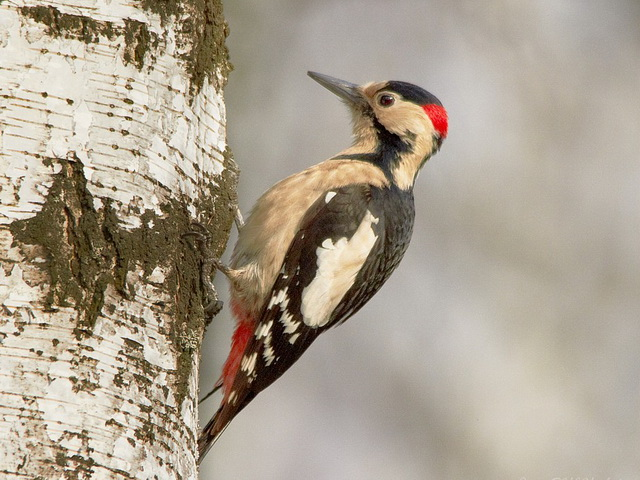
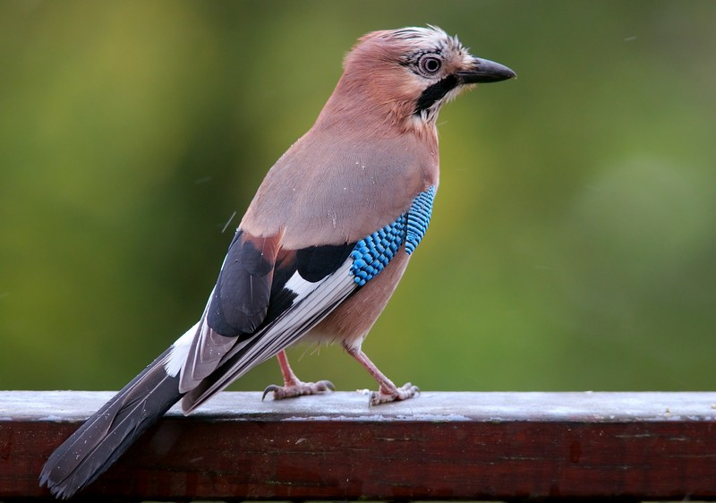

WELCOME
Welcome to our fake birdwatching site. If this were a real site, it would be the ideal place to come to learn more about birdwatching, whether you are a beginner looking to learn how to get into birding, or an expert wanting to share ideas, tips, and photos with other like-minded people. So don't waste time! Get what you need, then turn off that computer and get out into the great outdoors!Welcome to our fake birdwatching site. If this were a real site, it would be the ideal place to come to learn more about birdwatching, whether you are a beginner looking to learn how to get into birding, or an expert wanting to share ideas, tips, and photos with other like-minded people. So don't waste time! Get what you need, then turn off that computer and get out into the great outdoors!
Welcome to our fake birdwatching site. If this were a real site, it would be the ideal place to come to learn more about birdwatching, whether you are a beginner looking to learn how to get into birding, or an expert wanting to share ideas, tips, and photos with other like-minded people. So don't waste time! Get what you need, then turn off that computer and get out into the great outdoors!
FAVORITE PHOTO
 


